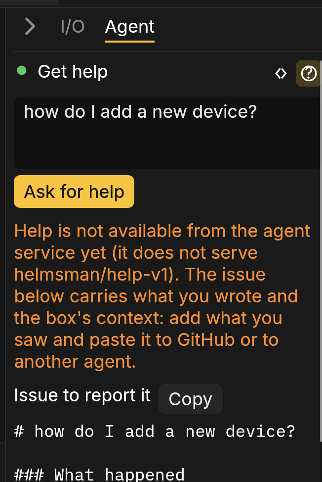

The Agent
The Agent is the way you program by describing the machine. The page opens on the Agent tab, the first in the left pane: type what the open Structured Text file should do, and press Send, the yellow paper plane (or Enter). The file is updated in place and the editor shows it; there is no conversation to read through.

An instruction can be a new behaviour ("the lamp latches until stop is pressed"), a change ("add a two-second delay before the belt starts") or a fix for the errors under the editor. When the Agent is done, the tab shows one status line and the Agent's reason for the change, for example:
Updated lamp.st: 2 scenarios passed, kept as tests. Why: the lamp now latches until stop is pressed.
Nothing runs until you deploy it, as with any edit of your own.
What the change did is marked until your next edit. In the code, lines it added are on a green ground and a red rule stands where it removed lines (point at the rule to read them). On the diagram, blocks and wires it added are outlined green and those it removed are drawn as faint red ghosts where they were. In the simulation the diagram shows the change at once; on a box the diagram is what runs, so its marks appear when you deploy.
Checked before it is written
With every change the Agent writes one or more scenarios: short requirement tests, each stating in plain words what it checks, such as "the lamp stays off while start is not pressed". Before anything is written, the change is taken into a copy of the project, compiled, and the scenarios run together with the project's own requirement tests.
If anything fails (a scenario, a requirement test, the compile, or the whole-file rule below), the Agent is sent what failed and fixes the answer, up to two more tries. An answer that still fails is never written: the file stays as it was and the tab says why, one line per failure. A change that comes without a scenario is asked for one once; if none comes, it is written and the status line says no scenario checks it. When the Agent answers without code (it cannot do what was asked, or it needs one fact from you), the tab shows its words and the file is not touched.
The scenarios of a change that is written are kept as requirement tests and appear in the Requirements tab, each under its own words.
When an instruction changes behaviour that an existing requirement test checks ("the motor runs only while start is held" against a test that says it latches), the Agent replaces that test with one stating the new requirement. The replacement has to pass like any scenario, every other test still has to, and the status line names it:
Updated main.st: 1 scenario passed, kept as a test; changed requirement test_latch: the motor runs while start is held.
The test as it was stays in History, and Undo puts both back.
History and Undo
Every change the Agent writes is saved as one revision in the project's History (the Files tab), named after the instruction. Its entry holds the instruction, the Agent's reason, the scenarios that passed, the answers that failed and were sent back, and the Agent's words. Edits of your own you had not saved are saved first, as their own revision, so the version before the change is always there.
Undo, the arrow hooked back beside Send, puts the file back as it was before the last change (a new revision; the change stays in History). It is offered while the file is still as the Agent left it; after an edit of your own, go back through History instead.
Follow-ups
Each instruction goes to the Agent with the whole file and the last five instructions carried out on that file, read from History. So "now make it blink faster" works: the Agent knows what "it" is, even after a reload. To start over, describe the whole behaviour in the instruction.
What the Agent may change
The Agent edits what you have in focus and nothing else: the file open in the Code tab, by default. When you select lines in the Code tab or pick a block in the diagram, a line above the instruction box says so:
- Editing: lines 12–30 of main.st: the lines you selected.
- Editing: block Motor1: the statement of the block you picked.
Whole file next to it drops the selection or the pick. A change to anything outside the scope (another file, lines outside the selection, anything beside the block) is refused, and the rest of the project stays exactly as it was.
The code always comes back as the whole open file with the change made in it, even for a few selected lines or a block. Nothing may be left out: an answer that skips part of the file, or writes "rest unchanged" where code should be, is sent back.
In the simulation
In the playground the Agent is free to try during the early release, with no key and no account. What you type is sent to a hosted model through our relay, so leave out anything confidential. The relay keeps no instruction and no answer; it counts requests so that misuse can be stopped. The free chat runs on a small daily allowance shared by everyone who tries the playground. When that is used up the tab says so, and it opens again by itself, usually within a day. The editor, the diagram and the simulation work without it.
With a built-in example open (they are read-only), the program the
Agent writes becomes a project of its own: the first time, it asks what
the program is called, and later new programs land in the same project
as main.st, the one before kept beside it as
v1.st, v2.st and so on.
On a box
On a box the Agent goes through the box's relay, which holds the key, so no box and no browser holds it. The tab works the same way: sign in as an engineer, open a program file, type the instruction and press Send or Enter (Shift Enter or Ctrl Enter starts a new line). The checked change is saved on the box as a revision with its History entry, by you, and Undo asks the box to restore the revision before it. The dot beside the tab's heading says whether the agent is online (green), offline (red) or not heard from yet (grey).
If the agent stores a proposal for review instead of sending the file back, the file is not touched and the tab offers Review to open it on the Proposals screen, where an approver signs it off under the box's policy.
Get help
On a box the Agent tab has a second mode, for someone who did not write the program and has a machine that does not do what it should. The toggle at the top right of the tab switches it: < > is Change the program, ? is Get help.

Sign in (any role), say what you saw or what you want to do in your own words, and press Ask for help, the yellow paper plane (Enter works too; Shift Enter or Ctrl Enter starts a new line). The page sends your words with its recent Messages, and the box adds what it knows: its version, the program it runs, its devices and their errors. Passwords, PINs and tokens are left out. Nothing on the box changes and nothing is filed anywhere.
What comes back depends on what you asked:
- A report of trouble ("the conveyor stopped, the lamp is red") gets What is likely wrong, the Agent's diagnosis from the box's messages and devices, and Issue to report it, a Markdown issue that carries your words and the box's details. Copy takes the whole issue, to paste into a new GitHub issue or to give to another agent.
- A question about how things work ("how do I load a program?") gets How to do it, an answer written from these help pages, with the pages it came from linked under Read more. No issue is written.
When the agent cannot be reached (the box has no relay, the relay is offline, or the agent service does not offer help yet), the box writes the issue by itself from your words and its details, and a line above it says why there is no diagnosis. For a question it also lists the help sections whose headings match it, under These help pages may answer it. The picture above shows this case.
Stop, the red square shown while the Agent is working, stops waiting for the answer.
What it will not do
The Agent changes the open file; it never deploys. It cannot force an input, change the I/O map on a box, or approve anything. Its code is checked like yours: an error is marked, a deploy that does not compile is refused.